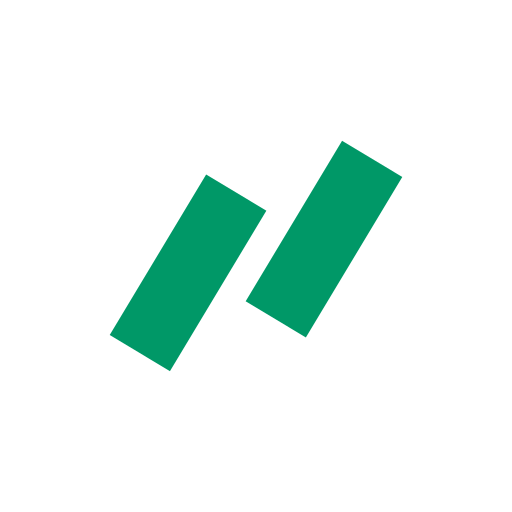
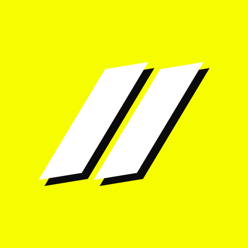

착한거래 CI 규정
// 는 두 가지를 뜻한다 — 잠시 멈춤(일시정지) 그리고 형광펜으로 줄 쳐 가며 잘 읽기. 「거래하기 전에 잠깐 멈춰서, 꼼꼼히 확인하자」가 착한거래의 약속이다.
원본은 모두 SVG(글자를 윤곽선으로 바꾼 벡터)다. 크기를 바꿔도 모양·비율이 그대로이므로 늘 SVG 원본에서 시작한다. 정리: 2026-11-17 대표 확정.
1. 기본형 chakhan-ci-on-light / on-dark / on-yellow.svg
 흰·밝은 바탕
흰·밝은 바탕 검정·어두운 바탕
검정·어두운 바탕 노랑 바탕
노랑 바탕색 규칙 (2026-11-17 대표)
- 착한거래 글씨와 // 그림자는 늘 같은 색이며, 바탕에 맞춰 다양하게 바꿀 수 있다. 기본은 바탕의 반대색(흰 바탕 검정, 검정 바탕 흰색), 어두운 바탕 강조형은 노랑.
- 형광펜(//) 색은 노랑 · 흰색 · 검정 세 가지뿐이다. 기본은 노랑, 바탕이나 글씨가 노랑이면 흰색, 한 색만 되는 곳은 검정. 그 밖의 색으로 칠하지 않는다.
| 바탕 | 착한거래 · // 그림자 · 카테고리 | // 형광펜 |
|---|---|---|
| 흰·밝은 바탕 | 검정 | 노랑 |
| 검정·어두운 바탕 | 흰색 | 노랑 |
| 노랑 바탕 | 검정 | 흰색 |
| 검정·어두운 바탕 · 강조형(노란 글씨) | 노랑 (카테고리는 흰색) | 흰색 |
| 한 색만 되는 곳(도장·각인·팩스) | 전부 검정, 그림자 없음 (단색판) | |
강조형 — 착한거래를 노란 글씨로 쓸 때 chakhan-ci-on-dark-accent.svg
브랜드 노랑을 크게 보여 줄 때(영상 엔딩·간판 등). 검정·어두운 바탕에서만 쓴다. 글씨·그림자 노랑, 형광펜 흰색, 카테고리 흰색.
 chakhan-ci-on-dark-accent.svg
chakhan-ci-on-dark-accent.svg chakhan-ci-ai-rentcar-on-dark-accent.svg
chakhan-ci-ai-rentcar-on-dark-accent.svg2. 색
형광 노랑
HEX #F6FD00 · RGB 246 253 0
// 형광펜 · 노랑 바탕
잉크
HEX #0B0B0C · RGB 11 11 12
흰·노랑 바탕의 글자·그림자
흰색
HEX #FFFFFF
검정 바탕의 글자·그림자 · 노랑 바탕의 형광펜
- 형광펜은 노랑 #F6FD00 · 흰색 #FFFFFF · 검정 #0B0B0C 세 가지만. 글씨·그림자는 바탕에 맞춰 다른 색도 쓸 수 있다(글씨와 그림자는 같은 색).
- 노랑은 #F6FD00 하나만 쓴다. 다른 노랑(금색·주황빛)으로 바꿔 칠하지 않는다.
- 인쇄: 형광 노랑은 일반 CMYK로 화면만큼 밝게 나오지 않는다. 인쇄물은 별색(형광) 또는 시험 인쇄로 색을 맞춘 뒤 확정한다(아직 확정값 없음).
3. 비율 H = 「착한거래」 글자 높이

| 항목 | 값 |
|---|---|
| // 길이 · 위치 | 0.88H, 글자 세로 가운데 |
| // 기울기 | 세로에서 오른쪽으로 31° |
| // 획 굵기 · 두 획 사이 | 0.25H(획에 직각) · 0.12H(가로) |
| // 끝 | 촉 각도대로 비스듬히 평행하게 자른 단색 획. 갈라짐·결·손떨림 표현 없음 |
| // 그림자 | 같은 획을 오른쪽 아래로 0.045H 옮겨 뒤에 깐다(색은 글자와 같다) |
| // ↔ 글자 | 0.20H (그림자 끝에서) |
| 글꼴 | SUITE Heavy (윤곽선으로 넣어 글꼴 없이도 같다) |
| 여백 | 로고 잉크 상자 둘레 0.5H 안에는 아무것도 두지 않는다 |
| 최소 크기(화면) | 기본형 높이 24px · 카테고리형 28px · 심볼 32px. 그보다 작으면 심볼만 쓴다 |
4. 카테고리 CI | 카테고리
AI 장기렌터카, 상식 한 스푼, 미스터리극장 … 은 모두 착한거래의 카테고리다. CI 오른쪽에 세로줄을 두고 쓴다.
 chakhan-ci-ai-rentcar-on-light.svg
chakhan-ci-ai-rentcar-on-light.svg chakhan-ci-ai-rentcar-on-dark.svg
chakhan-ci-ai-rentcar-on-dark.svgchakhan-ci-sangsik-on-light.svg
chakhan-ci-sangsik-on-dark.svg
- 글꼴은 CI와 같은 SUITE Heavy, 크기는 「착한거래」 글자의 0.47배, 바닥선(기준선)을 맞춘다.
- 워드마크 → 세로줄 → 카테고리 간격은 각 0.30H. 세로줄은 굵기 0.035H · 길이 0.70H, 흰 바탕 검정 30% · 검정 바탕 흰색 40%.
- 카테고리 글씨는 글자와 같은 색(흰·노랑 바탕 검정, 검정 바탕 흰색). 노랑으로 칠하지 않는다. 노랑 바탕용
-on-yellow.svg도 있다. - 새 카테고리는
build_ci.py의CATEGORIES에 더해 다시 만든다. 영상·웹에서 직접 쓸 때는chakhan-ci-spec.json의 위치·크기·색을 따른다.
5. 심볼 chakhan-symbol-*.svg
유튜브 채널·카카오톡 프로필처럼 작은 정사각·원형 자리에는 // 만 쓴다. 원형으로 잘려도 // 가 다 보이게 가운데에 작게 둔다.
 검정 바탕 (기본)
검정 바탕 (기본)
흰 바탕
노랑 바탕6. 단색
 chakhan-ci-mono-black.svg
chakhan-ci-mono-black.svg도장·각인·팩스·한 색 인쇄처럼 한 색만 되는 곳에 쓴다.
전부 검정, 그림자 없음.
7. 하지 않는 것
늘리거나 찌그러뜨리기형광펜을 노랑·흰·검정 밖의 색으로돌리거나 기울이기노랑 바탕에 흰 바탕용 (// 가 사라짐)노란 글씨(강조형)를 흰 바탕에- // 와 글자 사이를 떼거나 붙이기, // 만 크게·작게 바꾸기, 그림자 방향 바꾸기, 그림자를 글씨와 다른 색으로 하기.
- 다른 글꼴로 다시 쓰기, 외곽선·그라데이션·광택 같은 효과 넣기.
- 사진 위에 바로 올려 글자가 묻히게 두기 — 어두운 사진은 검정 바탕형, 밝은 사진은 흰 바탕형을 쓰고 대비가 약하면 단색 띠를 깐다.
8. 파일
| 파일 | 쓰임 |
|---|---|
chakhan-ci-on-light/dark/yellow.svg | 기본형 (흰·검정·노랑 바탕) |
chakhan-ci-on-dark-accent.svg | 강조형(노란 글씨, 어두운 바탕만) |
chakhan-ci-<카테고리>-on-light/dark/yellow/dark-accent.svg | 카테고리형 (ai-rentcar, sangsik) |
chakhan-symbol-on-dark/light/yellow.svg | 프로필 심볼 |
chakhan-ci-mono-black.svg | 단색 |
chakhan-ci-spec.json | 영상·웹이 따르는 비율·색 기준값 |
build_ci.py | 모든 SVG·기준값·비율 도면을 고정 수식으로 다시 만든다 |
export_png.py | PNG(로고 1200·2400px 폭, 심볼 512·1024px, 바탕 투명)를 D:/dev-artifacts/ai-staff/chakhan-ci-png/에 만든다. PNG는 git에 넣지 않는다 |